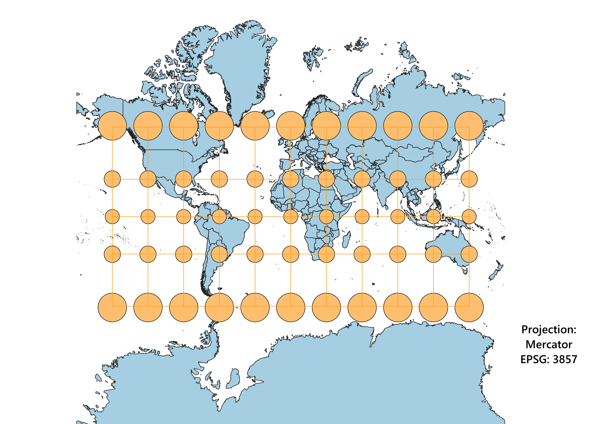
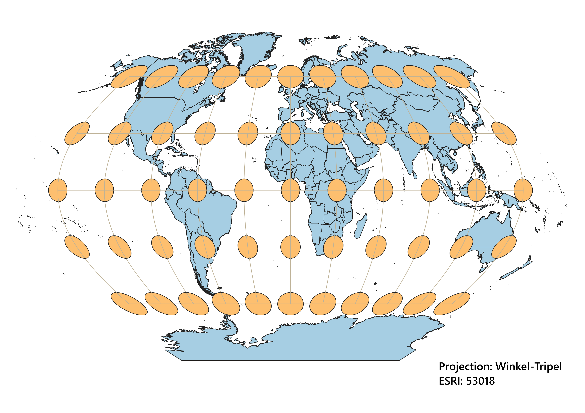
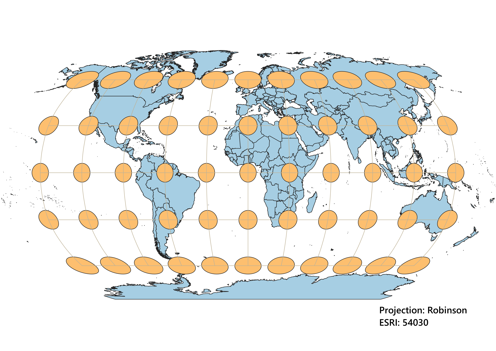
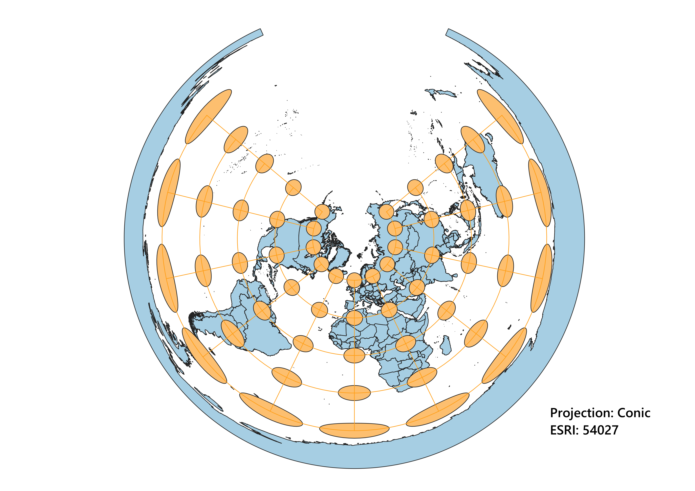
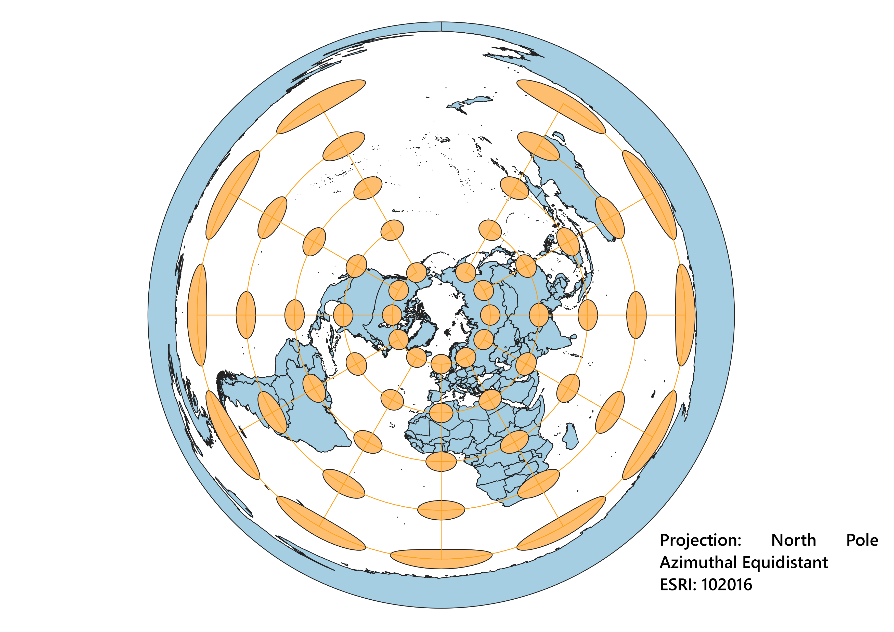
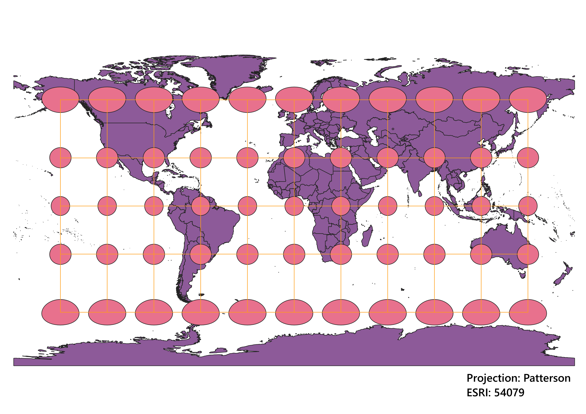
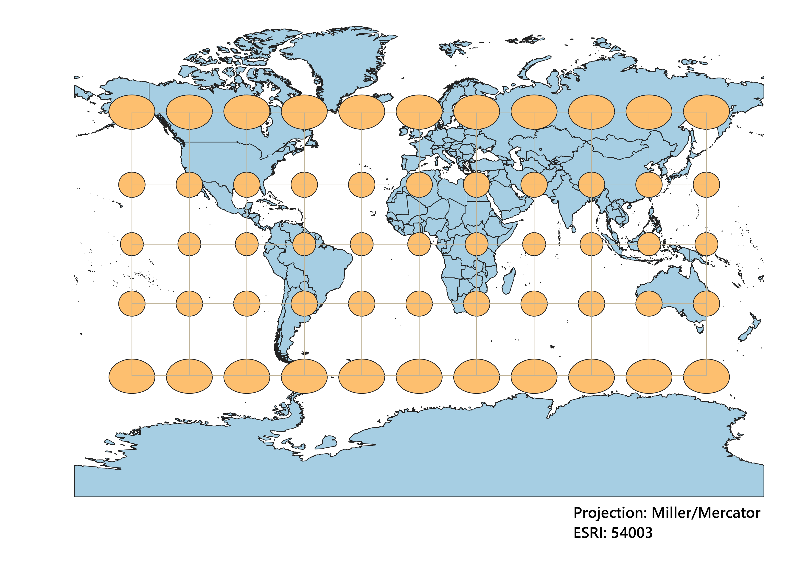

In this project I learned how to display images in different projections
How I displayed the map in different projections using QGIS
Using QGIS, I used the provided data from Natural Earth Data and the Indicatrix Mapper tool to create the following nine maps.
I was able to manipulate the projections by clicking the bottom corner ("EPSG") and searching for different projections via name
or measures. From their I used the "New Layout" tool to save each map as a .png.
WGS84 Projection
This cylindrical projection distorts size and shape around the poles. This makes areas around the North and
South pole look bigger than they actually are.

Aitoff Projection
Based on the Indicatrix Mapper, this projection mostly disorts shape. Size is also slightly distorted. The edges of the
map (North America and East Asia and Oceania) are the most distorted areas.

Psuedo-Mercator Projection
This cylindrical projection is confromal as it preserves shape. However, size is distorted. Just like the WGS84 projection.

Winkel Tripel Projection
This porjection is similar to the Aitoff projection. However, the Winkel Tripel projection does not distort size as much.
It has less drastic distortions.

Robinson Projection
Just like the Winkel Tripel projection above, the Robinsion projection distorts size and shape. It looks like
a mix of the Winkel Tripel and Mercator projection.

World Conic Projection
I am not entirely sure if this is how this projection should look. However, this projection distorts size and shape (the area seems to be equal).
This gap at the top makes this projection less aesthetically appealing that the rest.

North Pole Azimuthal Equidistant Projection
This Azimuthal projection distorts size and shape (just like the projection above). Since it is equidistant, it should preserve distance.

Patterson Projection
The Patterson and Psuedo-Mercator projections look very similar. Each distort size. Unlike Mercator, this projection does not seem to be equal area.

Miller Projection
Just like the projection above, the Miller projection is a cylindrcal projection that distorts size and area.

Data used for this project
Download Natrual Earth 1:10m Cultural Vector